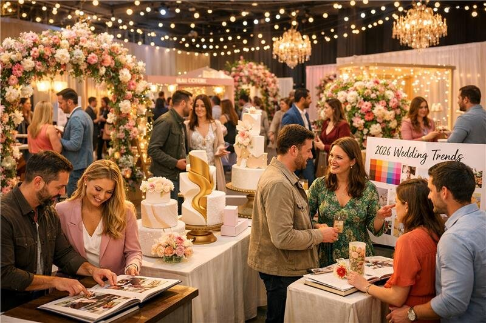

March 2026What stood out?
Vendors showcased hyper-personal touches (storytelling elements, custom vows, immersive guest moments), bold expressive styling (vibrant palettes, sculptural florals, retro-modern cakes), and multi-day vibes that turn weddings into weekend celebrations. Sustainability felt like a baseline, not a bonus, with low-key luxury shining through.
“This buzz isn't hype—it's a green light: Availability is solid, suppliers are ready, and trends align with meaningful, "us-focused" weddings.”
How to Ride the Wave This March
- Reflect & Refine Your Vision — Use show-inspired ideas to tweak your mood board. Did bold florals or interactive entertainment spark joy? Add it!
-
Hit Upcoming Fairs for Hands-On Inspo —
March is packed:
- Bridal Week London (22–24 March at Truman Brewery) — Europe's coolest buying event vibe, trends on display.
- London Wedding Show (29 March) — Massive supplier lineup for direct chats.
- Sustainable Events Lounge (25 March at BMA House) — Great for eco ideas if sustainability matters.
- Others: Cambridge Luxury Fair (22nd), York Racecourse (29th), etc. Go with questions ready—many offer on-the-spot discounts or priority slots.
- Book Key Pieces — Venues and photographers move quickest post-shows. Visit open days (e.g., previews for March weekends) to feel spaces in person.
- Embrace the Intentional Shift Skip trends that don't fit; focus on what tells your story. Outdoor freedoms, guest connection moments, and authentic details win hearts.
March 10 is your reset Monday—take one small step (book a fair ticket, update your vision list) and watch momentum build. Your wedding isn't about following—it's about creating something only you two could dream up.
Browse VenuesAndVendors.co.uk to filter venues and suppliers that match this fresh nergy—by style, sustainability, or location—for seamless inspiration and contacts.
What from the recent show buzz excites you most—bold styling, multi-day ideas, or eco touches? Share below or start exploring today! 🌸💍